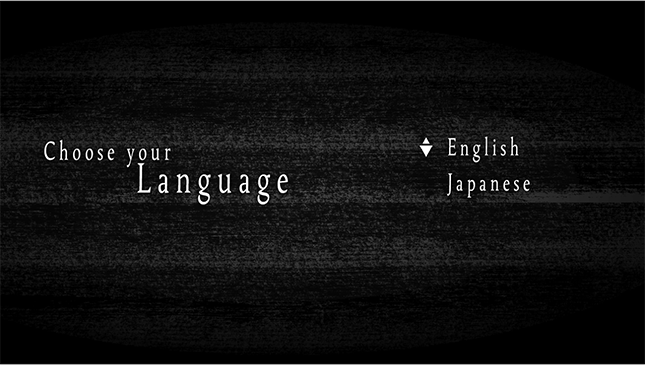

Let's start with the easiest of them all. We will recreate the language menu screen through pure eventing. But for this tutorial, we're going to use anImage Map. Make sure to read theImage Map and Hotspot Tutorial first!

Prepare your Graphics
We need to prepare two instances of our language screen. As usual, it's important to remember that both versions must be at the same size. Here is an example image:
First, we created two Hotspots.This is because we only have two supported languages, English and Japanese. So we must create two labels. I recommend keeping your label names as lowercase for an easier time.
Under each label, we addSet Game Datacommand with "Language - Code." What this does is set the current language by it's code.The code is set when you manage the Language Profile.So if the English hotspot gets clicked, we jump to "english" label and set "en_US" as code to select English. If Japanese is clicked we jump to "japanese" and set the code to "jp" to select Japanese.
By the end of it, we will change the Scene toTitle Screen.